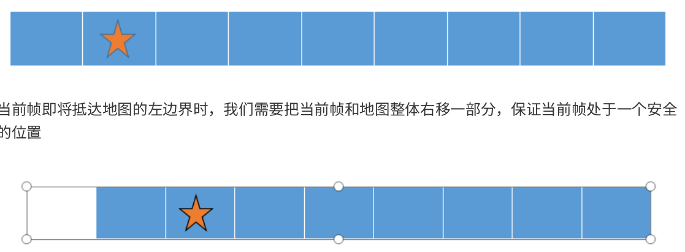

A_LOAm mapping模块 不同于前端的 scan-to-scan 的过程， LOAM 的后端是 scan-to-map 的算法，具体来说就是把当前帧和地图进行匹配，得到更准的位姿同时也可以构建更好的地图。由于是 scan-to-map 的算法，因此计算量会明显高于 scan-to-scan 的前端，所以，后端通常处于一个低频的运行频率，但是由于 scan-to-map 的精度往往优于 scan-to-scan ，因此后端也有着比起前端来说更高的精度。
体素滤波 1 2 3 4 5 6 7 float lineRes = 0 ;float planeRes = 0 ;nh.param<float >("mapping_line_resolution" , lineRes, 0.4 ); nh.param<float >("mapping_plane_resolution" , planeRes, 0.8 ); printf ("line resolution %f plane resolution %f \n" , lineRes, planeRes);downSizeFilterCorner.setLeafSize (lineRes, lineRes,lineRes); downSizeFilterSurf.setLeafSize (planeRes, planeRes, planeRes);
订阅消息 角点laser_cloud_corner_last 1 2 3 4 5 6 7 void laserCloudCornerLastHandler(const sensor_msgs::PointCloud2ConstPtr &laserCloudCornerLast2) { mBuf.lock(); cornerLastBuf.push(laserCloudCornerLast2); mBuf.unlock(); }
面点laser_cloud_surf_last 1 2 3 4 5 6 void laserCloudSurfLastHandler(const sensor_msgs::PointCloud2ConstPtr &laserCloudSurfLast2) { mBuf.lock(); surfLastBuf.push(laserCloudSurfLast2); mBuf.unlock(); }
点云velodyne_cloud_3 1 2 3 4 5 6 void laserCloudFullResHandler(const sensor_msgs::PointCloud2ConstPtr &laserCloudFullRes2) { mBuf.lock(); fullResBuf.push(laserCloudFullRes2); mBuf.unlock(); }
里程计laser_odom_to_init 初始位姿更新，前端里程计会定时向后端发送位姿$T^{odom}{current}$，但是在 mapping 模块中，我们需要的得到的位姿是$T^{map} {current}$，因此mapping模块就是需要估计出odom坐标系之间的相对位姿坐标$T_{odom}^{map}$。
1 2 3 4 5 6 7 8 9 10 11 12 13 14 15 16 17 18 19 20 21 22 23 24 25 26 27 28 29 30 31 32 33 34 void laserOdometryHandler (const nav_msgs::Odometry::ConstPtr &laserOdometry) mBuf.lock (); odometryBuf.push (laserOdometry); mBuf.unlock (); Eigen::Quaterniond q_wodom_curr; Eigen::Vector3d t_wodom_curr; q_wodom_curr.x () = laserOdometry->pose.pose.orientation.x; q_wodom_curr.y () = laserOdometry->pose.pose.orientation.y; q_wodom_curr.z () = laserOdometry->pose.pose.orientation.z; q_wodom_curr.w () = laserOdometry->pose.pose.orientation.w; t_wodom_curr.x () = laserOdometry->pose.pose.position.x; t_wodom_curr.y () = laserOdometry->pose.pose.position.y; t_wodom_curr.z () = laserOdometry->pose.pose.position.z; Eigen::Quaterniond q_w_curr = q_wmap_wodom * q_wodom_curr; Eigen::Vector3d t_w_curr = q_wmap_wodom * t_wodom_curr + t_wmap_wodom; nav_msgs::Odometry odomAftMapped; odomAftMapped.header.frame_id = "camera_init" ; odomAftMapped.child_frame_id = "/aft_mapped" ; odomAftMapped.header.stamp = laserOdometry->header.stamp; odomAftMapped.pose.pose.orientation.x = q_w_curr.x (); odomAftMapped.pose.pose.orientation.y = q_w_curr.y (); odomAftMapped.pose.pose.orientation.z = q_w_curr.z (); odomAftMapped.pose.pose.orientation.w = q_w_curr.w (); odomAftMapped.pose.pose.position.x = t_w_curr.x (); odomAftMapped.pose.pose.position.y = t_w_curr.y (); odomAftMapped.pose.pose.position.z = t_w_curr.z (); pubOdomAftMappedHighFrec.publish (odomAftMapped); }
首先需要了解的一件事情就是地图的构成，地图通常是当前帧通过匹配得到在地图坐标系下的准确位姿之后拼接而成，如果我们保留所有的拼接的点云，此时随着时间的运行，内存很容易就吃不消了，因此考虑存储离当前帧比较近的部分地图，同时，为了便于地图更新和调整，在原始 LOAM 中，使用的是基于珊格的地图存储方式。具体来说，将整个地图分成 21×21×11 个珊格，每个珊格是一个边长 50m 的正方体，当地图逐渐累加时，珊格之外的部分就被舍弃，这样可以保证内存空间不会随着程序的运行而爆炸。
珊格地图的调整 当当前位姿即将到达地图边界的时候，当前珊格地图就必须动态调整，如下图，我们以一维 case 为例
当前帧即将抵达地图的左边界时，我们需要把当前帧和地图整体右移一部分，保证当前帧处于一个安全的位置
这样相对移动之前，当前帧就处在一个 “ 安全的位置 ” ，然后左边会空出来一个珊格。
)
坐标变换 记录前端的odom坐标变换，将其转到map坐标系上，我们把前端的结果即为$T_{global}^{odom}$，变量名为q_wodom_curr和t_wodom_curr。通过q_wmap_wodom和t_wmap_wodom把结果调整到map坐标系
先通过前端的结果调整map的坐标变换，然后进行优化
1 2 3 4 5 6 7 8 9 10 11 12 13 14 15 16 17 18 19 20 21 22 q_wodom_curr.x () = odometryBuf.front ()->pose.pose.orientation.x; q_wodom_curr.y () = odometryBuf.front ()->pose.pose.orientation.y; q_wodom_curr.z () = odometryBuf.front ()->pose.pose.orientation.z; q_wodom_curr.w () = odometryBuf.front ()->pose.pose.orientation.w; t_wodom_curr.x () = odometryBuf.front ()->pose.pose.position.x; t_wodom_curr.y () = odometryBuf.front ()->pose.pose.position.y; t_wodom_curr.z () = odometryBuf.front ()->pose.pose.position.z; odometryBuf.pop (); while (!cornerLastBuf.empty ()){ cornerLastBuf.pop (); } mBuf.unlock (); TicToc t_whole; transformAssociateToMap ();
1 2 3 4 5 void transformAssociateToMap() { q_w_curr = q_wmap_wodom * q_wodom_curr; t_w_curr = q_wmap_wodom * t_wodom_curr + t_wmap_wodom; }
中心位置计算 在实际的代码中，实际是三维的，首先需要检测目前局部地图的中心位置
1 2 3 int centerCubeI = int x () + 25.0 ) / 50.0 ) + laserCloudCenWidth;int centerCubeJ = int y () + 25.0 ) / 50.0 ) + laserCloudCenHeight;int centerCubeK = int z () + 25.0 ) / 50.0 ) + laserCloudCenDepth;
然后通过判定中心位置距离总地图的位置来进行边界调整
调整位置 如果栅格地图已经触碰到边界了，那么就需要调整位置了，把当前局部地图的中心尽量往中心移动
下面是一个以 i轴 （x轴）快触碰到左边的情况为例子，这样地图结构需要整体往右边挪一格
1 2 3 4 5 6 7 8 9 10 11 12 13 14 15 16 17 18 19 20 21 22 23 24 25 26 27 28 29 30 while (centerCubeI < 3 ){ for (int j = 0 ; j < laserCloudHeight; j++) { for (int k = 0 ; k < laserCloudDepth; k++) { int i = laserCloudWidth - 1 ; pcl::PointCloud<PointType>::Ptr laserCloudCubeCornerPointer = laserCloudCornerArray[i + laserCloudWidth * j + laserCloudWidth * laserCloudHeight * k]; pcl::PointCloud<PointType>::Ptr laserCloudCubeSurfPointer = laserCloudSurfArray[i + laserCloudWidth * j + laserCloudWidth * laserCloudHeight * k]; for (; i >= 1 ; i--) { laserCloudCornerArray[i + laserCloudWidth * j + laserCloudWidth * laserCloudHeight * k] = laserCloudCornerArray[i - 1 + laserCloudWidth * j + laserCloudWidth * laserCloudHeight * k]; laserCloudSurfArray[i + laserCloudWidth * j + laserCloudWidth * laserCloudHeight * k] = laserCloudSurfArray[i - 1 + laserCloudWidth * j + laserCloudWidth * laserCloudHeight * k]; } laserCloudCornerArray[i + laserCloudWidth * j + laserCloudWidth * laserCloudHeight * k] = laserCloudCubeCornerPointer; laserCloudSurfArray[i + laserCloudWidth * j + laserCloudWidth * laserCloudHeight * k] = laserCloudCubeSurfPointer; laserCloudCubeCornerPointer->clear (); laserCloudCubeSurfPointer->clear (); } } centerCubeI++; laserCloudCenWidth++; }
代码中将三维数据映射到一维上，i从最大的开始处理，相当于一个面一个面的处理，把地图向左边移动一格。因此相对的，中心的索引是是向右移动
局部地图 计算局部的索引 以中心位置X轴方向取出5个格子，Y轴方向取出5个格子，Z轴方向取出3个格子。把这75个格子的内容作为局部地图。
这里也有两个地图，和特征一样，分为线地图和面地图
计算所有格子的索引，方便去laserCloudCornerArray寻找
1 2 3 4 5 6 7 8 9 10 11 12 13 14 15 16 17 18 19 20 21 22 int laserCloudValidNum = 0 ;int laserCloudSurroundNum = 0 ;for (int i = centerCubeI - 2 ; i <= centerCubeI + 2 ; i++){ for (int j = centerCubeJ - 2 ; j <= centerCubeJ + 2 ; j++) { for (int k = centerCubeK - 1 ; k <= centerCubeK + 1 ; k++) { if (i >= 0 && i < laserCloudWidth && j >= 0 && j < laserCloudHeight && k >= 0 && k < laserCloudDepth) { laserCloudValidInd[laserCloudValidNum] = i + laserCloudWidth * j + laserCloudWidth * laserCloudHeight * k; laserCloudValidNum++; laserCloudSurroundInd[laserCloudSurroundNum] = i + laserCloudWidth * j + laserCloudWidth * laserCloudHeight * k; laserCloudSurroundNum++; } } } }
取出局部地图 1 2 laserCloudCornerFromMap->clear ();laserCloudSurfFromMap->clear (); for (int i = 0 ; i < laserCloudValidNum; i++){ *laserCloudCornerFromMap += *laserCloudCornerArray[laserCloudValidInd[i]]; *laserCloudSurfFromMap += *laserCloudSurfArray[laserCloudValidInd[i]];}int laserCloudCornerFromMapNum = laserCloudCornerFromMap->points.size ();int laserCloudSurfFromMapNum = laserCloudSurfFromMap->points.size ();
对当前帧下采样 对当前帧的线特征和面特征进行下采样
对cornerLastBuf 进行下采样，此cornerLastBuf是从角点订阅laser_cloud_corner_last 的队列中pop出来的
对laserCloudSurfLast下采样，
特征提取 在前端里程记部分，我们通过当前帧的线特征和面特征分别和上一帧的线特征和面特征进行匹配，构建约束。然后进行优化求解。由于机械式激光雷达的性质，我们在寻找匹配的过程中需要注意线束相关的约束，以免构建的约束不符合实际。
在后端的当前帧和地图匹配的时候，我们就需要从地图里寻找线特征和面特征的约束对，此时，由于没有了线束信息，我们就需要采取额外的操作来判断其是否符合线特征和面特征的给定约束。
建立局部地图KDTree 建立线地图和面地图 1 2 3 4 5 6 7 if (laserCloudCornerFromMapNum > 10 && laserCloudSurfFromMapNum > 50 ){ TicToc t_opt; TicToc t_tree; kdtreeCornerFromMap->setInputCloud (laserCloudCornerFromMap); kdtreeSurfFromMap->setInputCloud (laserCloudSurfFromMap);
线特征提取 通过 kdtree 在地图中找到 5 个最近的线特征，为了判断他们是否符合线特征的特性，我们需要对其进行特征值分解，通常来说，当上述 5 个点都在一条直线上时，他们只有一个主方向，也就是特征值是一个大特征值，以及两个小特征值，最大特征值对应的特征向量就对应着直线的方向向量。
对当前帧进行循环，开始找五个最近的线特征
1 2 3 4 5 6 7 8 9 for (int i = 0 ; i < laserCloudCornerStackNum; i++){ pointOri = laserCloudCornerStack->points[i]; pointAssociateToMap (&pointOri, &pointSel); kdtreeCornerFromMap->nearestKSearch (pointSel, 5 , pointSearchInd, pointSearchSqDis);
注意，只有再第五个点（最远的点满足距离阈值内的时候，才可以添加残差项）
1 2 3 4 5 6 7 8 9 10 11 12 13 14 15 16 17 18 19 20 21 22 23 24 25 26 27 28 29 30 31 32 33 34 35 36 37 38 39 40 41 42 43 44 if (pointSearchSqDis[4 ] < 1.0 ){ std::vector<Eigen::Vector3d> nearCorners; Eigen::Vector3d center (0 , 0 , 0 ) ; for (int j = 0 ; j < 5 ; j++) { Eigen::Vector3d tmp (laserCloudCornerFromMap->points[pointSearchInd[j]].x, laserCloudCornerFromMap->points[pointSearchInd[j]].y, laserCloudCornerFromMap->points[pointSearchInd[j]].z) center = center + tmp; nearCorners.push_back (tmp); } center = center / 5.0 ; Eigen::Matrix3d covMat = Eigen::Matrix3d::Zero (); for (int j = 0 ; j < 5 ; j++) { Eigen::Matrix<double , 3 , 1 > tmpZeroMean = nearCorners[j] - center; covMat = covMat + tmpZeroMean * tmpZeroMean.transpose (); } Eigen::SelfAdjointEigenSolver<Eigen::Matrix3d> saes (covMat) ; Eigen::Vector3d unit_direction = saes.eigenvectors ().col (2 ); Eigen::Vector3d curr_point (pointOri.x, pointOri.y, pointOri.z) ; if (saes.eigenvalues ()[2 ] > 3 * saes.eigenvalues ()[1 ]) { Eigen::Vector3d point_on_line = center; Eigen::Vector3d point_a, point_b; point_a = 0.1 * unit_direction + point_on_line; point_b = -0.1 * unit_direction + point_on_line; ceres::CostFunction *cost_function = LidarEdgeFactor::Create (curr_point, point_a, point_b, 1.0 ); problem.AddResidualBlock (cost_function, loss_function, parameters, parameters + 4 ); corner_num++; } }
面特征提取 同样首先通过 kdtree 在地图中找到最近的面特征，原则上面特征也可以使用特征值分解的方式，选出最小特征值对应的特征向量及平面的法向量，不过代码里选用的是平面拟合的方式：
我们知道平面方程为$Ax+By+Cz+D=0$，考虑到等式的形式，可以进一步写成$Ax+By+Cz+1=0$,也就是三个未知数，五个方程，写成矩阵的形式就是一个 5×3 大小的矩阵。求出结果之后，我们还需要对结果进行校验，来观察其是否符合平面约束，具体就是分别求出 5 个点到求出平面的距离，如果太远，则说明该平面拟合不成功。
在面地图中找最近的五个点 1 int surf_num = 0 ;for (int i = 0 ; i < laserCloudSurfStackNum; i++){ pointOri = laserCloudSurfStack->points[i];
求平面方程 构建五个点方程组，并求解得到norm，注意这个norm的解为上面提到的A,B,C，刚好就是平面的法向量
1 2 3 4 5 6 7 8 9 10 11 12 13 14 15 Eigen::Matrix<double , 5 , 3 > matA0; Eigen::Matrix<double , 5 , 1 > matB0 = -1 * Eigen::Matrix<double , 5 , 1 >::Ones (); if (pointSearchSqDis[4 ] < 1.0 ){ for (int j = 0 ; j < 5 ; j++) { matA0 (j, 0 ) = laserCloudSurfFromMap->points[pointSearchInd[j]].x; matA0 (j, 1 ) = laserCloudSurfFromMap->points[pointSearchInd[j]].y; matA0 (j, 2 ) = laserCloudSurfFromMap->points[pointSearchInd[j]].z; } Eigen::Vector3d norm = matA0.colPivHouseholderQr ().solve (matB0);
判断点到面的距离 点到面的公式
如果最远的点距离平面的距离大于0.2，则判断该面拟合的不好，就放弃添加约束
1 2 3 4 5 6 7 8 9 10 11 12 bool planeValid = true ;for (int j = 0 ; j < 5 ; j++){ if (fabs (norm (0 ) * laserCloudSurfFromMap->points[pointSearchInd[j]].x + norm (1 ) * laserCloudSurfFromMap->points[pointSearchInd[j]].y + norm (2 ) * laserCloudSurfFromMap->points[pointSearchInd[j]].z + negative_OA_dot_norm) > 0.2 ) { planeValid = false ; break ; } }
添加残差块 1 2 3 4 5 6 7 Eigen::Vector3d curr_point (pointOri.x, pointOri.y, pointOri.z) ;if (planeValid){ ceres::CostFunction *cost_function = LidarPlaneNormFactor::Create (curr_point, norm, negative_OA_dot_norm); problem.AddResidualBlock (cost_function, loss_function, parameters, parameters + 4 ); surf_num++; }
地图位姿更新 我们通过第三节的地图优化，求出了当前帧在地图坐标系下的最优位姿$T^{laser}_{map}$，mapping模块需要知道的是实时的map坐标系和odom坐标系之间的变换，因此更新
1 2 3 4 5 void transformUpdate () q_wmap_wodom = q_w_curr * q_wodom_curr.inverse (); t_wmap_wodom = t_w_curr - q_wmap_wodom * t_wodom_curr; }
地图的更新 在之前我们对栅格地图进行了调整，部分内容空出，现在需要对这一部分空出的内容进行填充。
注意，地图所有的点分为角点和面点，一共分为了25x25x11的格子上，每一个格子都是点云，现在把他平铺，放进了两个数组中laserCloudCornerArray[i]和laserCloudSurfArray[i]中
填充角点点云 1 2 3 4 5 6 7 8 9 10 11 12 13 14 15 16 17 18 19 20 21 22 23 for (int i = 0 ; i < laserCloudCornerStackNum; i++){ pointAssociateToMap (&laserCloudCornerStack->points[i], &pointSel); int cubeI = int 25.0 ) / 50.0 ) + laserCloudCenWidth; int cubeJ = int 25.0 ) / 50.0 ) + laserCloudCenHeight; int cubeK = int 25.0 ) / 50.0 ) + laserCloudCenDepth; if (pointSel.x + 25.0 < 0 ) cubeI--; if (pointSel.y + 25.0 < 0 ) cubeJ--; if (pointSel.z + 25.0 < 0 ) cubeK--; if (cubeI >= 0 && cubeI < laserCloudWidth && cubeJ >= 0 && cubeJ < laserCloudHeight && cubeK >= 0 && cubeK < laserCloudDepth) { int cubeInd = cubeI + laserCloudWidth * cubeJ + laserCloudWidth * laserCloudHeight * cubeK; laserCloudCornerArray[cubeInd]->push_back (pointSel); } }
填充面点点云 1 2 3 4 5 6 7 8 9 10 11 12 13 14 15 16 17 18 19 20 21 22 23 for (int i = 0 ; i < laserCloudSurfStackNum; i++){ pointAssociateToMap (&laserCloudSurfStack->points[i], &pointSel); int cubeI = int 25.0 ) / 50.0 ) + laserCloudCenWidth; int cubeJ = int 25.0 ) / 50.0 ) + laserCloudCenHeight; int cubeK = int 25.0 ) / 50.0 ) + laserCloudCenDepth; if (pointSel.x + 25.0 < 0 ) cubeI--; if (pointSel.y + 25.0 < 0 ) cubeJ--; if (pointSel.z + 25.0 < 0 ) cubeK--; if (cubeI >= 0 && cubeI < laserCloudWidth && cubeJ >= 0 && cubeJ < laserCloudHeight && cubeK >= 0 && cubeK < laserCloudDepth) { int cubeInd = cubeI + laserCloudWidth * cubeJ + laserCloudWidth * laserCloudHeight * cubeK; laserCloudSurfArray[cubeInd]->push_back (pointSel); } }
发布数据 发布topic laser_cloud_surround 局部地图 1 2 3 4 5 6 7 8 9 10 11 12 13 14 15 16 17 18 if (frameCount % 5 == 0 ){ laserCloudSurround->clear (); for (int i = 0 ; i < laserCloudSurroundNum; i++) { int ind = laserCloudSurroundInd[i]; *laserCloudSurround += *laserCloudCornerArray[ind]; *laserCloudSurround += *laserCloudSurfArray[ind]; } sensor_msgs::PointCloud2 laserCloudSurround3; pcl::toROSMsg (*laserCloudSurround, laserCloudSurround3); laserCloudSurround3.header.stamp = ros::Time ().fromSec (timeLaserOdometry); laserCloudSurround3.header.frame_id = "camera_init" ; pubLaserCloudSurround.publish (laserCloudSurround3); }
发布topic laser_cloud_map 全部地图 1 2 3 4 5 6 7 8 9 10 11 12 13 14 15 if (frameCount % 20 == 0 ){ pcl::PointCloud<PointType> laserCloudMap; for (int i = 0 ; i < 4851 ; i++) { laserCloudMap += *laserCloudCornerArray[i]; laserCloudMap += *laserCloudSurfArray[i]; } sensor_msgs::PointCloud2 laserCloudMsg; pcl::toROSMsg (laserCloudMap, laserCloudMsg); laserCloudMsg.header.stamp = ros::Time ().fromSec (timeLaserOdometry); laserCloudMsg.header.frame_id = "camera_init" ; pubLaserCloudMap.publish (laserCloudMsg); }
发布路径aft_mapped_path 1 2 3 4 5 6 7 8 9 10 11 12 13 14 15 16 17 18 19 nav_msgs::Odometry odomAftMapped; odomAftMapped.header.frame_id = "camera_init" ; odomAftMapped.child_frame_id = "/aft_mapped" ; odomAftMapped.header.stamp = ros::Time ().fromSec (timeLaserOdometry); odomAftMapped.pose.pose.orientation.x = q_w_curr.x (); odomAftMapped.pose.pose.orientation.y = q_w_curr.y (); odomAftMapped.pose.pose.orientation.z = q_w_curr.z (); odomAftMapped.pose.pose.orientation.w = q_w_curr.w (); odomAftMapped.pose.pose.position.x = t_w_curr.x (); odomAftMapped.pose.pose.position.y = t_w_curr.y (); odomAftMapped.pose.pose.position.z = t_w_curr.z (); geometry_msgs::PoseStamped laserAfterMappedPose; laserAfterMappedPose.header = odomAftMapped.header; laserAfterMappedPose.pose = odomAftMapped.pose.pose; laserAfterMappedPath.header.stamp = odomAftMapped.header.stamp; laserAfterMappedPath.header.frame_id = "camera_init" ; laserAfterMappedPath.poses.push_back (laserAfterMappedPose); pubLaserAfterMappedPath.publish (laserAfterMappedPath);
ALOAM 总结 两个部分
高频里程计：当前帧和前一帧进行高速匹配
低频里程计：当期帧和前几帧通过变换组成的地图进行匹配
高频 前端 发布下 odom下的laser的坐标变换$T_{odom}^{laser}$，
低频，基于前端给出的里程计的结果，先乘以$T{map}^{odom}$，得到一个较为粗略的$T {map}^{laser}$(q_w_curr，t_w_curr)，然后利用线特征和面特征建立约束来优化此变量。
反过来求解$T_{map}^{laser}$校正，用于下一次估计。